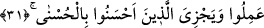

dâvet husûsunda nefsini fazla yorma. Zira bu tür kimseler “yoldan sapan”lar
sınıfındandır.
Bu âyette kâfir nefse ve bu nefsin “yahûdî sıfatları”na işâret edilmiştir. Zira Yahûdîler
ve kâfirler, Rasûlullah’ın (s.a.) dâvetini kabûle kabiliyetleri bulunmadığından
reddediyorlardı. Zira ezelde “kahır” mazharı olarak takdir olunmuş kimsenin ebedde
“lütuf” mazharı; yine ezelde lütuf mazharı kılınan kişinin de ebedde “kahır” mazharı
olması mümkün değildir.
Bir hadîs-i kudsîde: “Cennet yaratıldı, ardından onun ehli yaratıldı. Cehennem
yaratıldıktan sonra da onun ehli yaratıldı. Cennet ehli olarak yaratılanlara müjdeler
olsun! Cehennem ehli olarak yaratılanlara da yazıklar olsun!” buyrulmuştur.[99]
Büyüklerden bazıları “Nefis ancak kendisine arkadaş (karîn) olsun diye şerri
inadcılıkla yapar.” demişlerdir. “İlcâc”; yâni inadcılık bir iş, onu engellemeye ve
muhâlefet etmeye güç yetiremeyen bir kimseden sâdır oluyorsa ikrâh mertebesinde bir
haldir. Bir şeyi yapmaya zorlanan kimse, şerîat ve akla göre mes’ul değildir; hesaba
çekilmez. Bu yüzden Nebi (s.a.): “Hayır âdettir, şer ise inaddır.”[100] buyurmuştur. Bu
hadis, işleri bilen Nebi (s.a.) tarafından verilen büyük bir müjdedir. Yine o (s.a.) haber
vermiştir ki nefis zât itibariyle hayırlı bir şeydir. Çünkü babası kudsî ve temiz olan
“Ruh”tur. Şer, ancak arkadaş olarak kabul etmiş ve şerri nefsin zâtî bir sıfatı olarak
değerlendirmemiştir.
31. Göklerde ve yerde bulunanlar hep Allah’ındır. Bu, Allah’ın, kötülük edenleri
yaptıklarıyla
cezâlandırması,
güzel
davrananları
da
daha
güzeliyle
mükâfâtlandırması içindir.
“Göklerde ve yerde bulunanlar” yaradılış ve mülkiyet bakımından “hep
Allah’ındır.” Ne asıl, ne istiklal ve ne de iştirak bakımından başkasının değildir. Bu
âyet, “O, yolundan sapanı daha iyi bilir; O, hidâyette olanı da çok iyi bilir.” âyeti ile
“Bu, Allah’ın, kötülük edenleri yaptıklarıyla cezâlandırması…” âyeti arasında bir ara
(mu’teriza) cümle olup kendinden önceki cümleyi takrir eder. Zira her şeyin Cenâb-ı
Hakk’ın mahlûku olması O’nun mahlûkatın hallerini bildiğini gösterir. “Yaratan bilmez
mi?” âyeti de bunu ifâde eder. Âyette sanki şöyle denilmek istenmiştir: O yoldan
sapanın sapkınlığını da yola gelenin hidâyetini de bilir ve bunların karşılığını vermek
için muhâfaza eder.
Bu, Allah’ın, kötülük edenleri yaptıklarıyla; yâni onların dalâlet nev’indeki amelleri
-ki kötülük olarak ifâde edilmiştir- veya amelleri sebebiyle “cezâlandırması, …”
“Onların amelleri sebebiyle” ifâdesi, Allah’ın her iki fırkanın yapacağına dâir bilgi